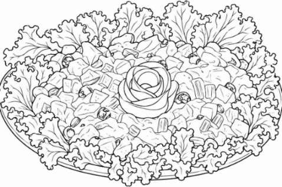

Salpicão de frango — uma tradição que também rende boas histórias
Salpicão de frango — uma tradição que também rende boas histórias
O salpicão de Dona Zelinda atravessou gerações. O que começou entre as receitas preparadas para os filhos tornou-se uma tradição que permanece até hoje, presente nos encontros da família e nas lembranças que continuam sendo construídas ao redor da mesa.
E, como acontece em toda família, até uma receita tão conhecida pode render uma boa brincadeira.
Certa vez, enquanto Dona Zelinda preparava o salpicão na casa de Lidiane, seu neto Thales resolveu provocá-la com uma pergunta:
- Dona Zelinda, é sal na pica ou sal no cão?
A resposta veio ligeira, sem que ela precisasse interromper o trabalho na cozinha:
É sal no teu c...
A brincadeira ficou registrada como mais uma daquelas histórias que fazem parte da vida familiar. Porque, na cozinha de Dona Zelinda, não se misturam apenas ingredientes. Misturam-se gerações, intimidade, bom humor e a liberdade de brincar com quem a gente conhece tão bem.
E o salpicão continua lá, atravessando o tempo. A receita permanece, a família cresce e as histórias ganham novos capítulos — alguns temperados com ingredientes, outros com uma resposta que ninguém esperava.
Ingredientes
2 peitos de frango cozido e picados 2 tomates sem pele
1 kg de batatas cozidas 1 cebola picada
100 g de azeitonas (sem o molho) 1 lata de milho verde
2 pimentões picados
300 g de cenouras cozidas Sal e pimenta a gosto Cheiro-verde picado
Salsão em pedaços pequenos
Maionese, limão, sal e pimenta a gosto para temperar.
Modo de preparo

Refogue o frango em pedaços pequenos com a cebola e os tomates sem pele picadinhos. Deixe esfriar. Em uma tigela grande, junte o frango aos demais ingredientes já cozidos e picados e tempere com maionese, limão, sal e pimenta a gosto. Decore a seu gosto e leve à geladeira até a hora de servir.
Figura 24 - Salpicão